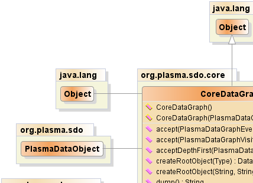
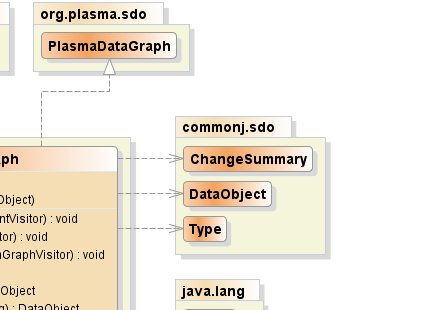
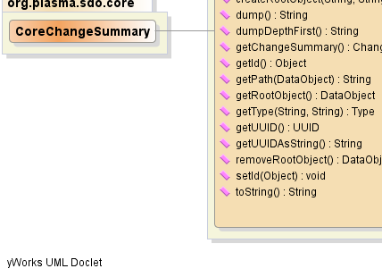
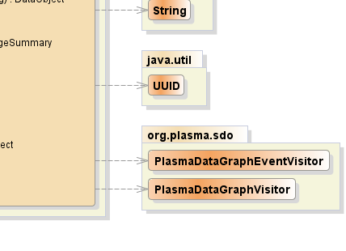

public class CoreDataGraph extends java.lang.Object implements PlasmaDataGraph
|  |  |
|  |  |
| Constructor and Description |
|---|
CoreDataGraph() |
CoreDataGraph(PlasmaDataObject root) |
| Modifier and Type | Method and Description |
|---|---|
void |
accept(PlasmaDataGraphEventVisitor visitor)
Begin breadth-first traversal of this DataGraph, the given
visitor receiving various events for each graph
node traversed.
|
void |
accept(PlasmaDataGraphVisitor visitor)
Begin breadth-first traversal of this DataGraph, the given
visitor receiving "visit" events for each graph node traversed.
|
void |
acceptDepthFirst(PlasmaDataGraphVisitor visitor)
Begin depth-first traversal of this DataGraph, the given
visitor receiving "visit" events for each graph node traversed.
|
commonj.sdo.DataObject |
createRootObject(java.lang.String namespaceURI,
java.lang.String typeName)
Creates a new root data object of the
specified type. |
commonj.sdo.DataObject |
createRootObject(commonj.sdo.Type type)
Returns the root
data object of this data graph. |
java.lang.String |
dump() |
java.lang.String |
dumpDepthFirst() |
commonj.sdo.ChangeSummary |
getChangeSummary()
Returns the
change summary associated with this data graph. |
java.lang.Object |
getId()
Returns an object to be used and managed by client
Data Access Services
as an identifier for a Data Graph. |
java.lang.String |
getPath(commonj.sdo.DataObject dataObject)
Calculates and returns the path relative to the data-graph root for the
given data object.
|
commonj.sdo.DataObject |
getRootObject()
Returns the root
data object of this data graph. |
commonj.sdo.Type |
getType(java.lang.String uri,
java.lang.String typeName)
Returns the
type with the given the URI,
or contained by the resource at the given URI,
and with the given name. |
java.util.UUID |
getUUID()
Returns the UUID for this data graph, which is the same
UUID used for the root Data Object.
|
java.lang.String |
getUUIDAsString()
Returns the UUID for this data graph, which is the same
UUID used for the root Data Object, as a
character string.
|
commonj.sdo.DataObject |
removeRootObject()
Detaches and returns the root
data object of this data graph. |
void |
setId(java.lang.Object id)
Sets an object to be used and managed by client
Data Access Services
as an identifier for a Data Graph. |
java.lang.String |
toString() |
public CoreDataGraph()
public CoreDataGraph(PlasmaDataObject root)
public java.lang.String toString()
toString in class java.lang.Objectpublic java.util.UUID getUUID()
getUUID in interface PlasmaDataGraphpublic java.lang.String getUUIDAsString()
getUUIDAsString in interface PlasmaDataGraphpublic void setId(java.lang.Object id)
Data Access Services
as an identifier for a Data Graph.setId in interface PlasmaDataGraphid - the identifierpublic java.lang.Object getId()
Data Access Services
as an identifier for a Data Graph.getId in interface PlasmaDataGraphpublic commonj.sdo.DataObject createRootObject(java.lang.String namespaceURI,
java.lang.String typeName)
specified type. An
exception is thrown if a root object exists.createRootObject in interface commonj.sdo.DataGraphjava.lang.IllegalStateException - if the root object already exists.namespaceURI - namespace of the type.typeName - name of the type.createRootObject(Type),
getType(String, String)public commonj.sdo.DataObject createRootObject(commonj.sdo.Type type)
data object of this data graph.createRootObject in interface commonj.sdo.DataGraphtype - the type of the new root.DataObject.getDataGraph()public commonj.sdo.ChangeSummary getChangeSummary()
change summary associated with this data graph.getChangeSummary in interface commonj.sdo.DataGraphChangeSummary.getDataGraph()public commonj.sdo.DataObject getRootObject()
data object of this data graph.getRootObject in interface commonj.sdo.DataGraphDataObject.getDataGraph()public commonj.sdo.DataObject removeRootObject()
data object of this data graph.removeRootObject in interface PlasmaDataGraphDataObject.getDataGraph()public commonj.sdo.Type getType(java.lang.String uri,
java.lang.String typeName)
type with the given the URI,
or contained by the resource at the given URI,
and with the given name.getType in interface commonj.sdo.DataGraphuri - the namespace URI of a type or the location URI of a resource containing a type.typeName - name of a type.public java.lang.String getPath(commonj.sdo.DataObject dataObject)
getPath in interface PlasmaDataGraphdataObject - the target data objectpublic void accept(PlasmaDataGraphVisitor visitor)
accept in interface PlasmaDataGraphvisitor - the graph visitor receiving traversal eventsDataGraph,
DataObject,
PlasmaDataGraph,
PlasmaDataObject,
PlasmaDataGraphVisitor.visit()public void acceptDepthFirst(PlasmaDataGraphVisitor visitor)
acceptDepthFirst in interface PlasmaDataGraphvisitor - the graph visitor receiving traversal eventsDataGraph,
DataObject,
PlasmaDataGraph,
PlasmaDataObject,
PlasmaDataGraphVisitor.visit()public void accept(PlasmaDataGraphEventVisitor visitor)
accept in interface PlasmaDataGraphvisitor - the graph visitor receiving traversal eventsDataGraph,
DataObject,
PlasmaDataGraph,
PlasmaDataObject,
PlasmaDataGraphEventVisitor.start(),
PlasmaDataGraphEventVisitor.end()public java.lang.String dump()
dump in interface PlasmaDataGraphpublic java.lang.String dumpDepthFirst()
dumpDepthFirst in interface PlasmaDataGraphPlasmaSDO™ and PlasmaQuery™ are trademarks of TerraMeta Software, Inc. Copyright © 2011 - All Rights Reserved.